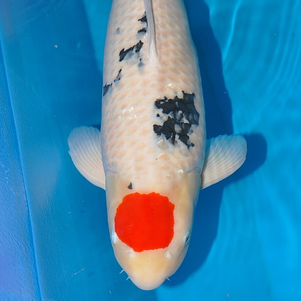
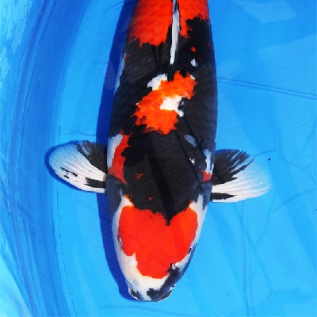

“It begins with Kohaku and ends with Kohaku,” as many koi hobbyists say!
When you think of koi fish, the chances are you are thinking of at least one of the three Gosanke breeds. Gosanke means “the three families” in Japanese. This term is used to reference three things that best represent a category. In the world of koi, it refers to Kohaku, Taisho Sanshoku, and Showa Sanshoku. These three are the most important, popular, and award-winning breeds of koi because of their long reputation for having the best color, size, and shape.
Kohaku are one of the oldest and most popular breeds of koi fish available. They are recognizable by their pure white body and bright red markings (hi). The name Kohaku means “amber” in Japanese, which describes its beautiful, fiery markings. There are a lot of different varieties of Kohaku with different patterns of hi. A few of these varieties include the Nidon Kohaku, Sandan Kohaku, and Tancho Kohaku.
Kohaku are typically judged by the brightness of their colors and the crispness of the edges of their hi. A good Kohaku will have an unblemished, pure white base with crisp, consistent orange-ish red hi. The exact shade of the hi isn’t so important, so long as it’s all uniformly the same shade. The Kohaku should also be large and plump, a tell-tale sign of a healthy fish.
The exact origins of the Kohaku is up to speculation, but it is widely accepted that they were created by breeding a white female with a red head and a white male with a cherry blossom pattern. Another theory as that this white and red coloration came about as a result of an accidental gene mutation in the 1880s, and was so unique and attractive that people began selectively breeding for it.

Tancho
All koi fish have great cultural significance in Japan, however, the Tancho has taken it to a different level. Not only do they blatantly look like the Japanese flag, but they are also named after the sacred red-crowned crane (Grus japonensis), known as “tancho” in Japanese. These cranes are fabled to live over a thousand years and are a symbol of good luck and fidelity.
Tanchos are one of the rarest breeds of koi fish because they cannot be specifically bred for. This is because they are technically Kohaku, Taisho, or Showa that happened to be born with only one red spot on its head rather than an entire overlaying pattern (hi).
Selectively breeding for them is incredibly difficult as there are a multitude of genetic alleles responsible for koi coloration and pattern, so this variety is often highly sought after due to its rarity and inability to be bred consistently or in great numbers, even amongst the Gosanke varieties. If you wish to have a specific variety of koi, such as Tancho, there’s always a significant chance that even breeding with two Tancho parents will yield offspring that look entirely different.
All Tancho koi will have the signature red spot, but their body coloring will vary depending on the parent variety. Their bodies can be either pure white (Tancho Kohaku), white with small black spots (Tancho Sanke), or white with large black bands (Tancho Showa). A perfect Tancho will have a pure white base, ink-black sumi spots, and a crimson red spot on in the center of its head. It is acceptable for this spot to come as an oval, heart, or diamond shape, but the circle is the most popular.

Showa Sanshoku
The Showa is one of the youngest koi fish varieties. It wasn’t fully perfected until 1965 during the Showa era of Japan, after which it was named. The Showa came about in 1927. A breeder by the name of Jukichi Hoshino crossed a Kohaku (white and red coloration) with a ki utsuri (yellow with black bands). Showa didn’t gain much steam initially, as the yellow of the ki utsuri bestowed the resulting Showa offspring with dull, off-color reds and whites.
It wasn’t really until the 1960’s when another breeder, Tomiji Kobayashi, paired his Showas with Kohakus possessing intensely red coloration, resulting in more attractive Showas now commonly known as Kobayashi Showa. This line is what most modern Showas are based off of, and is commonly referred to as the old style Showa.
Showa have a black body with white (shiro) and red markings. A good quality Showa will be predominately black with very little white to accent it. Their hi should be bright and vibrant with crisp edges. The sumi should blend into their fins, called motoguro. A very sought-after pattern on a Showa is a sumi blaze on their head. It can be very difficult to breed high quality Showa because their patterns constantly change throughout their juvenile stage and do not become permanent until adulthood.
It can be difficult to tell apart the Showa and the Sanke because they look so similar, but fear not! There are many ways to tell them apart, but just remember this telltale sign: a Showa will always have more black than a Sanke, and if there is black on the head it’s a Showa!